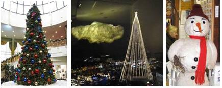

Merry Christmas and a Happy New Year!
Things have been a bit hectic the last couple of days, getting the most urgent things done before closing for the week of rest. One of the nicest and calmest events these past days was the 'DevTech Switzerland Xmas Fondue' with Kean on Wednesday, and the discussion of his wonderful and instructive WPF Transformer application for interactively understanding and experimenting with points, vectors, and 3D matrix transformations in AutoCAD.
Anyway, now I am ready to settle down into Christmas, some time with my grown-up kids, and a week of rest and no blogging.
I wish you a Very Merry Christmas and a Happy New Year!
Here are some fitting pictures by Partha Sarkar from various conference locations:

Many thanks to Partha for these and all the opthers he made during the tour!
I will be away until January 3, 2011.
Thank you very much for all your inspiring interest and appreciation, and I look forward to exploring and sharing many new exciting Revit API topics and projects with you in 2011!